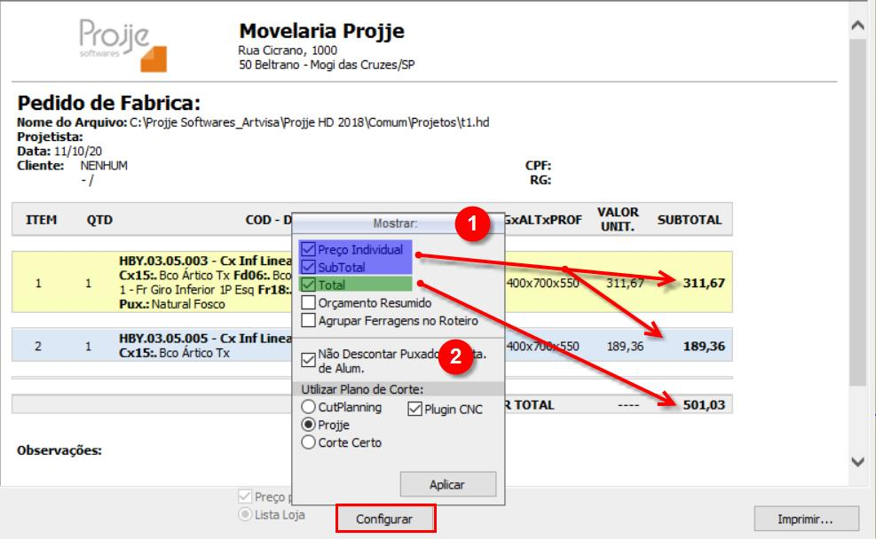
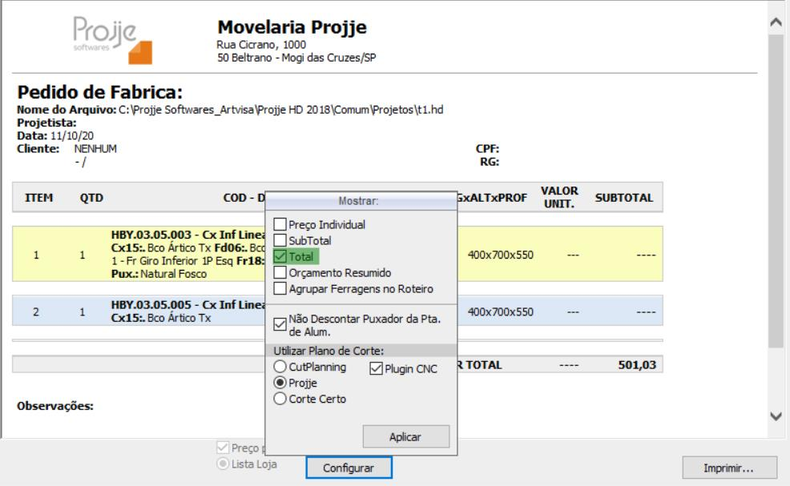
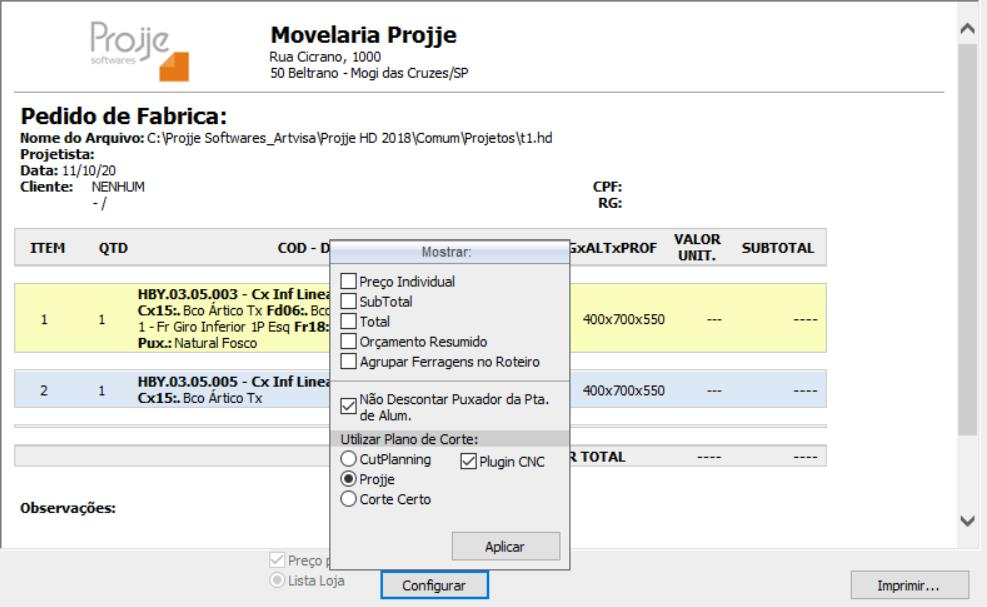
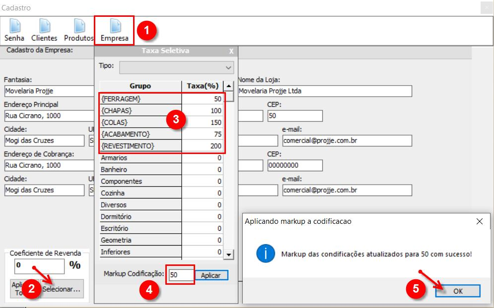

Os relatórios de custos e venda da Licença Loja permitem algumas configurações relevantes, ora para disponibilizar aos clientes, ora para montadores ou mesmos para seus departamentos internos (venda, financeiro e contabilidade como exemplos). de um produto ou serviço para constituir o preço de venda. Partindo da ideia de custo mais preço ou preço margem.
1. Observe as opções de configurações apresentadas na imagens abaixo, essa funcionalidade permite que você disponibilize relatórios para cada parte interessada com a devida personalização necessária.
  
2. Alinhe antecipadamente com o gestor da sua empresa a formatação adequada para cada situação (venda, montagem ou registros internos).
5. Se for necessário migrar de uma opção à outra sugerimos aplicar o índice 0% para zerar, igualando o preço de venda ao de custo, dessa forma você pode reiniciar o processo.